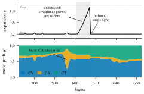
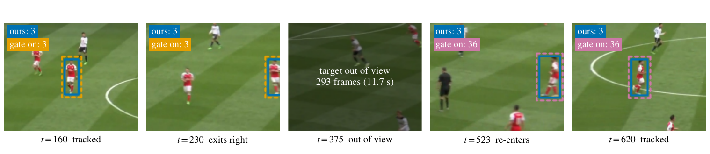

Adaptive, Robust, Compensated Multi-Object Tracking with Interacting Multiple Models
Athlitix Inc.
Online ARC-SORT on a SportsMOT validation clip under a panning broadcast camera, with live ReID and camera-motion compensation.
In sports broadcasts, athletes accelerate and change direction while the camera pans and zooms. ARC-SORT is a tracking-by-detection tracker that trains nothing and runs in real time. Its design rule: the tracker measures how uncertain it is, and that measurement decides how it acts.
† Evaluation-server leaderboard as of August 2026.
An Interacting Multiple Model (IMM) Kalman filter with constant-velocity, constant-acceleration and coordinated-turn models gives every track a predictive covariance. That uncertainty drives three decisions, each on a different time scale.
The covariance sets each track's Expansion IoU. Predictable tracks keep a tight box. Uncertain ones, such as a track that has gone undetected, search wider. This continuous coupling is what matters: using the same covariance as a hard Mahalanobis gate hurts at every threshold we swept.
When two tracks cross, the assignment cost reports whether the decision was close. Such pairs stay under review. At most one corrective identity swap is applied once post-crossing appearance shows the first call was wrong. This adds +1.0 HOTA on both test sets for under a millisecond per frame.
For a player who leaves the frame for seconds, extrapolated motion carries no information. The offline merge therefore drops the usual motion gate and links tracklets by appearance alone.

One real track. Top: the search region grows while the player is undetected and snaps tight when re-found. Bottom: the IMM shifts weight to the constant-acceleration model during a burst.
A player leaves the frame for 11.7 seconds. With the motion gate on, the re-entry gets a new identity (3 → 36). Linking by appearance alone keeps identity 3.
Top: ARC-SORT (appearance-only merge). Bottom: motion gate on. Same detections and embeddings.

The same exit, frame by frame: tracked, exits right, out of view for 293 frames, re-enters.
SportsMOT test set. Competitor rows are from each paper's own results; ARC-SORT rows come from the evaluation server. "Trained" marks methods that learn an association, motion or appearance component.
| Method | Trained | HOTA | AssA | DetA | MOTA | IDF1 | IDs |
|---|---|---|---|---|---|---|---|
| Deep-EIoU | no | 77.2 | 67.7 | 88.2 | 96.3 | 79.8 | 2659 |
| Deep HM-SORT | no | 80.1 | 72.7 | 88.3 | 96.6 | 85.2 | 1703 |
| CAMELTrack | yes | 80.4 | 72.8 | 88.8 | 96.3 | 84.8 | n/a |
| GTA (offline, on Deep-EIoU) | no | 81.0 | 74.5 | 88.2 | 96.3 | 86.5 | 2737 |
| TDLP | yes | 81.9 | 76.3 | 88.0 | 95.8 | 87.5 | n/a |
| MeMoSORT | yes | 82.1 | 75.6 | 89.3 | 97.0 | 86.4 | n/a |
| ARC-SORT on Deep-EIoU's detections + embeddings | no | 80.31 | 74.14 | 87.04 | n/a | 86.92 | 1320 |
| ARC-SORT (full) | no | 81.82 | 76.24 | 87.84 | 97.09 | 88.47 | 1414 |
| Foundation-model tier | |||||||
| SAM 3 + Deep-EIoU (mask propagation) | no | 87.2 | 84.2 | n/a | 98.1 | 93.6 | n/a |
On Deep-EIoU's own public detections and embeddings, ARC-SORT scores 80.31 HOTA, +3.1 over Deep-EIoU, so the gain comes from association alone. On DanceTrack test ARC-SORT reaches 62.1 HOTA with the same association settings. More rows and ablations are in the paper.
Every tracker below received identical inputs. Baselines are Roboflow trackers 2.6.1 at default settings with each sequence's real frame rate; ARC-SORT is 0.1.1 with its stock preset. Online trackers, no post-processing, scored with TrackEval.
| Tracker | HOTA | AssA | IDF1 | IDs |
|---|---|---|---|---|
| ARC-SORT | 86.1 | 75.8 | 81.0 | 1516 |
| BoT-SORT | 84.5 | 73.7 | 79.3 | 2941 |
| C-BIoU | 84.1 | 71.8 | 78.2 | 3700 |
| ByteTrack | 84.0 | 71.7 | 78.1 | 4016 |
| SORT | 81.6 | 69.7 | 76.2 | 2996 |
| OC-SORT | 78.4 | 65.0 | 72.5 | 3255 |
Same split and input as Roboflow's results page; our SORT, ByteTrack, OC-SORT and BoT-SORT runs match their published numbers within 0.05 HOTA. Roboflow reports McByte (SAM/Cutie mask propagation) at 85.0. ARC-SORT used the SportsMOT preset with no SoccerNet tuning.
| Tracker | SportsMOT, YOLOX-X | DanceTrack, YOLOX-X | SportsMOT, GT boxes | DanceTrack, GT boxes |
|---|---|---|---|---|
| ARC-SORT | 79.8 | 59.1 | 90.1 | 84.7 |
| BoT-SORT | 76.5 | 53.5 | 87.9 | 79.9 |
| C-BIoU | 75.2 | 53.6 | 87.4 | 79.9 |
| ByteTrack | 75.0 | 50.5 | 87.5 | 80.1 |
| OC-SORT | 72.5 | 52.0 | 83.8 | 77.8 |
| SORT | 71.8 | 45.2 | 86.3 | 78.7 |
Where it does not lead: on MOT17 (pedestrians, mostly static cameras; identical YOLOX-X detections, nothing tuned) ARC-SORT is mid-pack at 70.8 HOTA, behind BoT-SORT (72.5) and C-BIoU (72.2). Its gains come from moving cameras and fast, non-linear motion.
ByteTrack (top) and ARC-SORT (bottom) on one SportsMOT volleyball clip, same detections. ID switches are counted against ground truth (31 vs 15); red rings mark a switch, green the same player keeping their ID. Trails are camera-compensated.
ARC-SORT takes boxes and scores. We ran it unchanged behind nine detectors from five libraries, on three SportsMOT validation clips, with every tracker receiving identical detections. HOTA:
| Detector | ByteTrack | BoT-SORT | ARC-SORT online | ARC-SORT + offline merge |
|---|---|---|---|---|
| YOLOv8x | 57.0 | 59.4 | 63.1 | 67.1 |
| YOLOv10x | 61.8 | 63.9 | 62.5 | 65.9 |
| YOLO11x | 57.5 | 60.3 | 59.4 | 63.4 |
| YOLO12x | 56.7 | 59.8 | 61.8 | 66.7 |
| YOLO26x | 57.0 | 57.0 | 60.7 | 65.2 |
| YOLOv13x | 57.2 | 58.6 | 61.1 | 62.5 |
| RT-DETRv2-R101 | 57.9 | 58.7 | 60.4 | 64.6 |
| RF-DETR-L | 65.2 | 65.9 | 68.6 | 72.6 |
| YOLOX-X (SportsMOT-trained) | 77.0 | 78.6 | 82.8 | 86.2 |
A compatibility check, not a benchmark: three clips are too few to rank trackers. COCO detectors also find referees and spectators, who are not labelled in SportsMOT, so absolute scores are low for every tracker. Baselines are the Roboflow trackers 2.6.1 implementations with default settings; ARC-SORT is 0.1.1.
The core tracker needs only NumPy, SciPy and OpenCV and runs on CPU. ReID, detectors and visualization are optional extras.
# core tracker (+ ReID and visualization extras)
pip install "arcsort[reid,viz]"from arcsort import ARCTracker tracker = ARCTracker.from_preset("sportsmot") # motion-only on CPU; pass reid_weights=... for ReID for frame in video: # BGR numpy image dets = my_detector(frame) # (N, 6): x1, y1, x2, y2, score, class_id tracks = tracker.update(dets, frame) # (M, 5): x1, y1, x2, y2, track_id
Since 0.1.1 tracks report the detection box they matched (higher HOTA in every setting we tested), and
Visualizer(motion_compensated_trails=True) keeps trails fixed to the scene while the camera moves.
See the changelog.
One command per paper row reproduces the reported results exactly from released caches: see the reproduction guide.
@article{adari2026arcsort,
title = {{ARC-SORT}: Adaptive, Robust, Compensated Multi-Object Tracking
with Interacting Multiple Models},
author = {Adari, Girish Kumar},
journal = {arXiv preprint arXiv:2610.22306},
year = {2026}
}